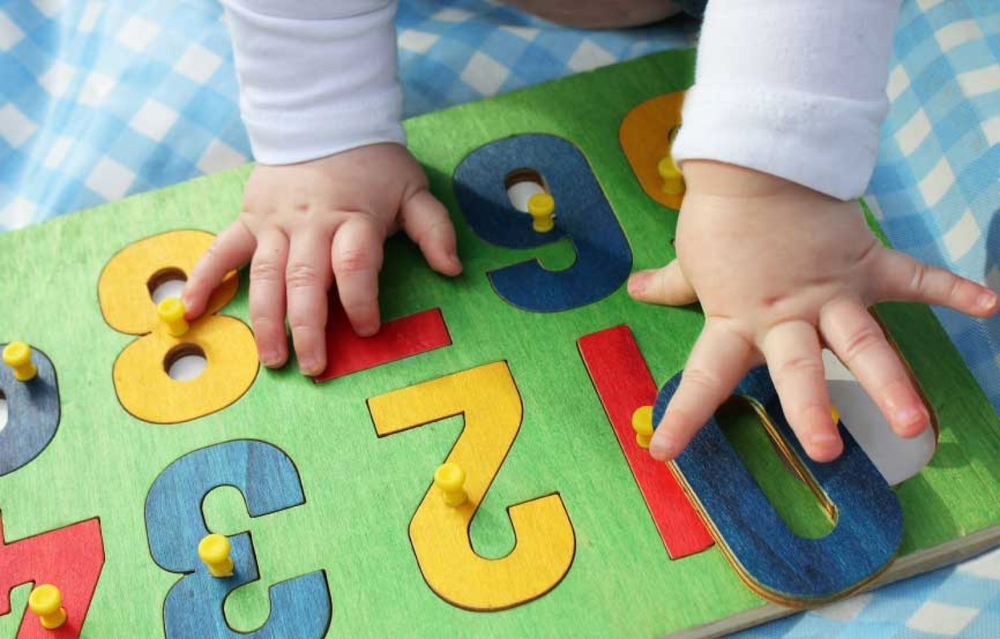
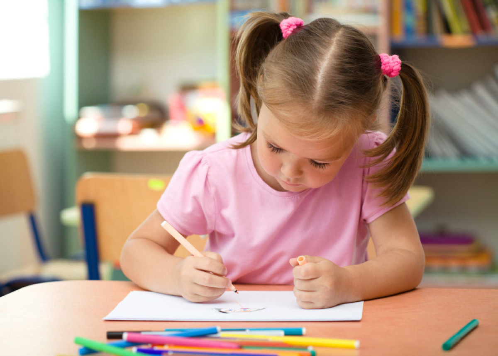
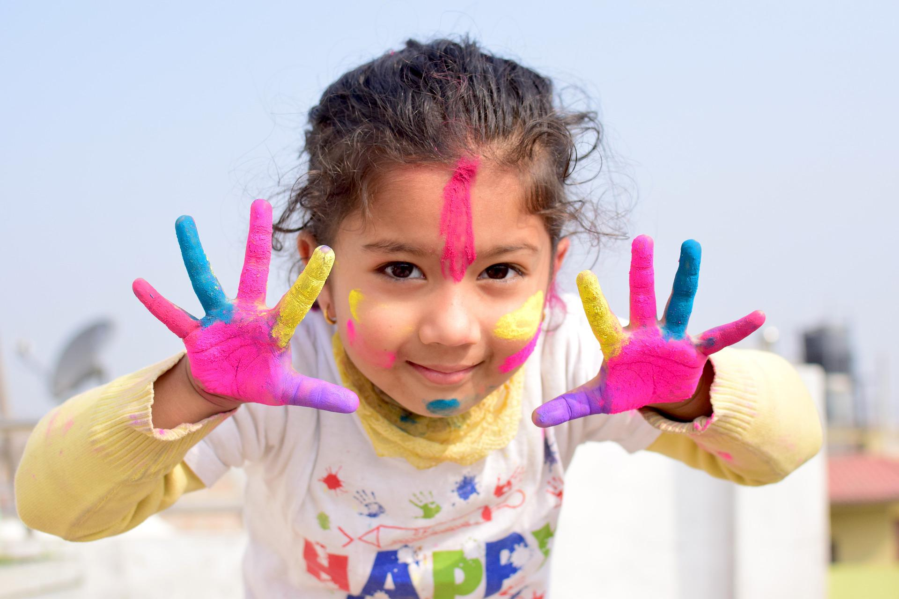

Interested in filling out paperwork to enroll your child(ren)?
Please fill out the application and enrollment packet and drop the
paperwork off at the front desk once completed:
Enrollment Checklist

Infant Care
6 weeks to 16 months
“Primary Care” is the key phrase in understanding the quality of
care your baby will receive as a part of our Infant Care
Program. Each teacher is assigned a group (no more than 4) of
infants to care for. They work hand in hand with each parent to
create a specialized care plan for the children in their group.
We offer a safe, warm, and loving environment affording each
Infant the best opportunities for growth. We foster this growth
through exploration of the world around them. They have access
to our centers as well as our Bye-Bye buggies and will take
rides on days when weather permits. Each child is provided with
their own crib and sheets. These are never shared by multiple
students and are disinfected as well as laundered several times
per day. We use neutral cleaning products and steam to disinfect
this room limiting any harsh chemicals our infants may come into
contact with. To keep our Infant room clean and germ free we
restrict access by anyone other than our Infants and Teachers.
We do this in hopes of keeping the germs of the outside world
from entering the class. All of our caring Infant Room Staff
treat each child as though he/she is their own. They are also
trained in Infant CPR, First Aid, and we have other staff
members with Medication Administration (MAT) training.
Our teachers set goals with our parents and work with each
Infant to reach certain developmental milestones. We use
educational activities that focus on; rolling over, walking,
grasping, crawling, pulling up, and mastering of fine motor
skills. Each day the Infants will take part in several group
circle times intended to aid in verbal communication and social
interaction. Our staff will engage them in singing songs,
reading stories and playing with sensory objects. Our educators
also teach American Sign Language as an alternative form of
communication.

Toddler Care
Ages: 16 months to 24 months
Our Toddler room is full of action and adventure! This room is
designed to aid in the growth and development of a toddler by
the completion and the refining of skills learned in our Infant
room. Children are given the opportunity to increase core
strength, fine and large motor skills, walking, running,
jumping, and communication. Addressing these skills is very
important for the future success of the children. Our schedule
in this class allows the student time to play, learn, rest, and
explore the world around them. Circle times include the
introduction of colors, shapes, date, time, music, and movement.
Throughout the day the class will sit down together for a few
minutes of group learning. Students will interact socially
together and with the teachers to make learning fun. By using
flashcards, sign language, and sensory boxes our teachers aid
the children in learning with all of their senses. The students
in this class will engage in table activities each day that
focus on strengthening their fine motor skills as well as their
ability to follow simple directions. Our children also have the
opportunity to express themselves through guided and free art
activities several times weekly.

Two Year Olds
24 months to 36 months
Our Two Year Old Room is set up for what in some cases can be
the most difficult time in a child’s life; the year in which a
child may be expected to start caring for his/her self: using
the bathroom, wiping, washing their hands, dressing themselves,
and proper eating etiquette. We strive to give each two year old
child a sense of routine and structure that will aid in
mastering each of these valuable skills.
Our bathroom is set up specially in order to accommodate potty
training with two separate bathrooms and potties side by side at
different heights. This allows 2 children to use the bathroom
together helping to eliminate any anxiety or fear that might
occur. We have smaller potties which allow small children to
feel comfortable and at peace with the potty itself. Group potty
time helps with the younger children who learn by watching a
child that has already mastered the proper technique. We also
have a potty that is standard size which allows the children,
who have mastered the smaller potties, to practice the routine
of placing and using a step stool and the proper placement and
removal of a potty seat.
At this age our children’s brains are like sponges. Our
teachers’ goal each day is to educate and expose our students to
the world around them. Our class has two circle times per day
which are designed for group interaction and the establishment
of a time to focus on instruction. After circle time the class
breaks up into smaller groups for free play and guided
activities. Each student will have one on one activity time with
a teacher developing fine motor skills and creativity through
art and expression. Our students also participate with stories,
puppet play, and song and dance times daily.
Preschoolers
3 years old
This is the first class in our center that begins our students’
preparation for school. We have a core curriculum based on the
Virginia Standards of Learning. We work closely with the Augusta
Count School system, and teach from the “Blueprint Curriculum.”
Our Preschool Class goes through a year-long process of
exploration and exposure to our world, while honing the basic
skills needed for advancement into our Jr. Kindergarten class.
Our teachers follow a weekly thematic calendar designed to
expose the children to what is happening in our world at that
time. The teachers focus class discussions, stories, worksheets,
and circle times within each of these weekly themes. Circle
times last between 20 and 30 minutes each day and gradually grow
in dynamic as the students learn new material. Telling time,
date, colors, shapes, counting, Spanish, Math, patterns, letter
and number recognition, name recognition, and writing all occur
throughout the course of their day, whether it be during circle
time or small group activities.

Jr. Kindergarten
4 to 5 years old
This class is our next and final step in your child's
preparation for school. We have a core curriculum based on the
Virginia Standards of Learning, and lesson plans based on
Augusta County Schools “Blueprint Curriculum.” They will take
part in a more traditional school structured day with several
circle times and educational activities which create a great
classroom setting. We focus our efforts on teaching our students
everything they need to know before entering kindergarten. This
program was established under the supervision of our area’s
local kindergarten teachers. They supported us in our efforts to
create a class that was structured to resemble the kindergarten
classes in our local school system. They provided us a list of
skills that would make our student’s transition to local school
systems as effortless as possible, giving our students the
skills needed to be successful and advance in their efforts
throughout school.
We offer a structured educational and nurturing environment. Our
teachers conduct two circle times per day centered on our core
curriculum and our weekly thematic units. Our students have a
chance to create through free art and express themselves with
manipulative and free dance daily. Guided activities are
conducted each day under the supervision of our certified
teachers. We focus on letter recognition, handwriting, one to
one correspondence, patterns, telling time, math, and counting.
Our students learn to follow multi-step directions given during
class activities. They also work on writing short sentences,
sight words, spelling, grammar, Spanish, adding, subtracting,
reading, and cognitive skills. We strive to give our children
the best foot forward and prepare them for the education that
they will receive when they go to school. Our teachers also
promote literacy and language skills through creative
storytelling. They participate in cognitive activities,
vocabulary expansion, and alphabet knowledge in an effort to
expand our student’s oral language skills before heading off to
school.

School Age
5 to 13 years old
The valleys premier school age program! We provide the most
outstanding environment for children of our community to play
and relax after school, during the summer or days that schools
are out. Our spacious rooms provide over 10,000 square feet of
play space filled with games, toys, ping pong, pool, basketball,
foosball, air hockey, Wii, X-Box, and much, much more. We also
have our own indoor Gym; 5000 sq. foot room where our students
can run, jump, play dodge ball and enjoy other fun activities.
Check out our 25 ft. Bouncy House with double slides and a
basketball hoop. Our staff is there to help our students with
their homework every day after school, as well, which frees up
more time at home to be spent with family or extracurricular
activities. We transport children to and from local schools in
the Augusta County and Waynesboro City school districts. Before
school and after school care is available for those school
systems as well. Our drivers are trained, licensed and insured
for the transportation of students too! Look for one of our vans
if you ever pick you child up from school!!
